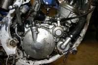
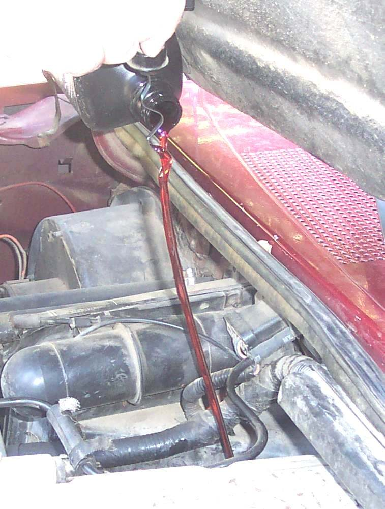
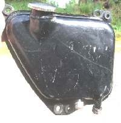

A dry-sump engine keeps its oil in a tank above the oil pump. While the engine is off, oil slowly seeps back through the pump into the crankcase. The level in the tank then reads too low. The level is only correct after the engine has run long enough to return that oil to the tank.
Safety
- The engine and exhaust get hot. Do not touch them.
- Keep the bike upright on a stand, not on the side stand.
Steps
- If the engine has stood for some time, or you have just changed the oil, start it and run it for about five minutes first. The scavenge pump moves the oil from the crankcase back to the tank.
- After a hard ride, let it idle for a few minutes so the level settles.
- Stop the engine. Stand the bike upright. Do not use the side stand.
- Wipe the dipstick, put it back without screwing it in if the manual says so, remove it and read the level between the marks.
- Add or remove oil as needed. A funnel helps, and oil can be poured slowly down the dipstick tube if the filler is awkward.
- Some engines have a second check bolt on the crankcase. Follow the manual for it.
Check your work
- The reading is between the marks on two checks, some minutes apart.
If it did not fix the problem
- Level keeps falling: Oil level drops but there is no visible leak.
- Level too high: Too much oil in the engine.